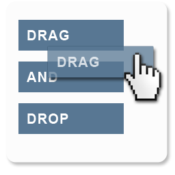

SwiftUI

SwiftUI is Apple's declaritive UI framework and its used all throughout My Spot. My Spot is built on SwiftUI and requires much less code than its UI counterpart, UIKit. SwiftUI aslo made it much easier to target multiple apps in the same project. For example, the AppClip extension uses the axact same files that the main app uses, making it much easier to manage and maintain both apps.
UIKit

UIKit is Apple's imperative UI framework that offers much greater support for legacy features due to its longer life compared to the newer SwiftUI. UIKit was used many times throughout My Spot to enable features such as maps with greater flexability, share sheets, and much more. The iMessage app was built entirely in the UIKit lifesycle, of course without storyboards because no one wants to mess with that on a large scale project.
Cloudkit

Cloudkit is Apple's BAS (backend as a service) framework that manages all of My Spot's backend. The reason I chose Cloudkit is its price... Free! It is limited to only ios or javascript deployment but this project was made with only ios development in mind so this service fit perfectly. It does have charges that can come up but the limits are far from what My Spot will ever reach. Its services also itegrate very well with ios applications. While it can be limiting in some ways, it works very well for My Spot. Cloudkit is used for shared playlists, backing up spots to personal iCloud storage, syncing spots across devices, push notifications, and of course nearly every process under the hood in the discover tab. It is also very secure and private to keep the user's mind at ease when it comes to their personal data.
CoreData

CoreData is Apple's device storage framework that is used as the backbone of My Spot when it comes to managing data. I'll admit that CoreData was quite a learning curve and can become very complex with object graphs and persistant stores. My Spot uses two persistant stores, one for shared data and one for private data. My Spot uses NSPersistantCloudKitContainer (yeah that's a mouthful) to effortlessly sync up Cloudkit with CoreData to cretae a seemless experience for the user. My Spot also takes advantage of CoreSpotlight which indexes CoreData to be searched for in Spotlight Search. The object graph for My Spot is fairly simple with spots that can point to a parent playlist and playlists that can point to many spots (the graph is more complex when it comes to public data such as accounts, comments, etc.).
CoreML

CoreML is Apple's machine learning framework that goes hand to hand with VisionKit. These frameworks together allow My Spot to make predictions on what is in each image associated with a spot. It is also used as a filter in My Spot to remove sensitive images before they are uploaded. Its models have the benefit of being very small in size (relatively speaking) as they only store relationships.
Notifications

My Spot subscribes to changes in a certain database in CloudKit and handles those notifications with the use of two extensions, UNNotificationServiceExtension and UNNotificationContentExtension. The service extension acts first when a notification is recieved, it parses the data sent (data is sent with a mutable flag) and finds the correct ids it needs to fetch more data such as images or text and when it's ready, notifies the user. Then when the user taps and holds on the notification, the content extension comes to play. The content extension handles the view that should be displayed to the user. In the context of a spot notification, it first recieves the image and text data from the service extension then uses that data to build the view. In a new comment context, the content extension also shows a text field with a send button that the user can type in to quickly reply to a comment without even opening the app.
Localization

My Spot is localized to 12 regions including: English, French, German, Hindi, Indonesian, Japanese, Korean, Portuguese, Russian, Simplified Chinese, Spanish, and Ukrainian. These localizations are across the entire app including Info.plist, Intents file, and of course the app's content itself (all targets). Each localization is done throught Google translate (yes it's inaccurate in most situations) and then translated once more by some of my good bilingual friends. However, I don't recieve help for every localized region, meaning some regions are not yet guaranteed to be perfectly translated. If you find any errors in translations, please check out this GitHub repo with all of the .string files used to localize My Spot, and make a pull request to fix those errors.
Combine

Combine is Apple's declaritive Swift api that is used all throughout My Spot. It is particularly useful when it comes to upholding the MVVM architecture. I have built My Spot to use view model objects to build and manage the data of each view with dependency injection. Combine offers a powerful way to react to changes asynchronously. After reafactoring my code to use combine, I have dramatically increased readability and reusability, while also dramatically decreasing the clutter in each view.
Group Activities

Group Activities is Apple's framework that enables SharePlay in My Spot. Group Activites offers an observer object to make it easy to decide if a device is compatible to start a SharePlay (in an active facetime call). If it is compatible, My Spot shows a SharePlay button in the discover tab to begin a session to vote on spots. In the SharePlay metadata, the ActivityType is set to generic (SharePlay is typically used to sync media in a facetime call but genreic allows for any type of synced experience across devices). A Codable object is passed around to each participant, updating them on the status of all other participants. If a new participant joins late, they are immediately sent up to date data to begin voting.
EventKit

EventKit is Apple's framework that allows access to a users calendar events. My Spot allows users to create an event for a spot which presents the user with an event sheet and certain data regarding the location is already filled out and set to the spot's location. EventKit also provides features for adding reminders or programmatically adding events without any UI but in My Spot, these features were not necessary.
WatchKit

WatchKit is Apple's framework for creating WatchOS apps. My Spot has a watch app that uses SwiftUI and luckily most SwiftUI views play very nicely with WatchKit. My Spot also uses WatchConnectivity which allows for the connection of a user's iPhone and Apple Watch. This connection is used when a spot is saved from the Apple watch. If a user is operating their watch and found an interesting spot near them, they can save it to their phone and now when they pull out their iPhone and open My Spot, that spot they were looking at on their watch is now saved to their device.
MapKit

MapKit is Apple's framework used to show location on Apple Maps. Of course this is a very integral feature in My Spot and is used heavily in the app. MapKit offers a SwiftUI and UIKit implementation, however, My Spot uses the UIKit version due to certain SwiftUI limitaions such as annotation clusters and satelite view. My Spot also uses local searches to quickly find a location with a simple search. For more info on MapKit's implementation in My Spot check out "Create Spots", "View Spots in Detail", and "Discover Spots" by scrolling up or selecting "Features".
WidgetKit

WidgetKit is Apple's widget framework for iOS, iPadOS, and macOS. My Spot uses widgets with the user's location to show relevant spots near the user at any given time. The widget is updated once it is granted permission for location use or when the OS has determined that the user has moved to a new location. On tap of a spot the widget opens My Spot with a deeplink to show the spot in detail. My Spot's widget also uses intents to customize the widget. It can be customized to show the user's spots, or the location can be changed from the user's location to any location they choose by searching for a new location.
Messages

Messages is Apple's framework used to make sticker packs or iMessage apps. In the case of My Spot it is using the iMessage app extension to build a message app that allows the user to send their spots over iMessage. The extension is built entirely in UIKit with TableView + pagination to display all of the users spots and with a tap of any spot, that spot is sent to the message contents in the form of an image and the spots name/location name. If the spot message is tapped, a deeplink is triggered to open the spot up in more details in the My Spot app.
Mantis

Mantis is a community built, open source, package available on GitHub. An issue I had with My Spot is I needed a way for users to intuitively crop any image uploaded to a 1:1 aspect ratio to keep uniformity throughout the app. Mantis was a perfect solution and very easy to implement. Mantis is implemented in the create/edit spot sheet, and create/edit account sheet. When an image is chosen from photos or from the camera, Mantis handles the cropping of each image in a very clean UI with solid unit tests and even localization.
WeatherKit

WeatherKit is Apple's api for iOS 16 to fetch weather information. My Spot uses this api in the detail view of eah spot. This is very useful for users deciding what day they should visit said spot. It allows users to check if it's too much rain to visit, or too hot. Maybe the user wants to go when it's the brightest out, well the WeatherKit api also predicts when the sun will be at its peak. And if there are any weather alerts in the area, My Spot will advise the user so they can make their own descision on whether they would still like to visit the spot or not. The weather object recieved in this api call retrives a large amount of weather data and My Spot uses that data to best inform the user on each day's weather conditions.
StoreKit
StoreKit is Apple's api for AppStore related functions. My Spot uses StoreKit in several ways including: asking for app review after x amount of spots have been created, prompting the user to download the main app when in AppClip, and for in-app purchases. In-app purchases use an asynchronous iterator to check for any transaction updates to guarantee the user's purchase is successful.
Core Transferable
Core Transferable is Apple's api for drap and drop related functions. My Spot uses Core Transferable in devices running IOS 16 or above. Press and hold on any spot in a list and it will become draggable to any location inside or outside the app. Spots that are locally saved and in the my spots tab can be drag and dropped into playlists. Spots that are in the cloud or from discover/profile tab can be drag and dropped into any textfield such as messages or mail, where the payload is link the spot.